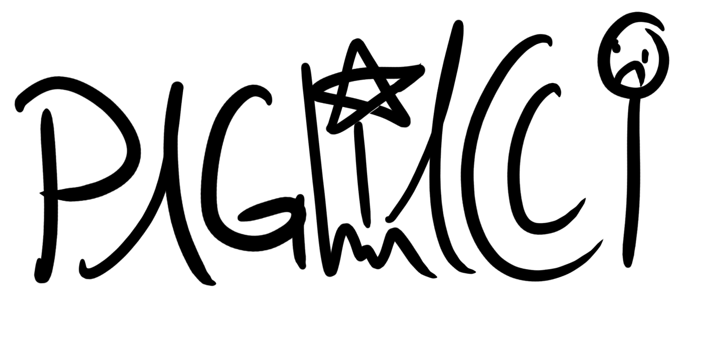

Arriving home from work one day, a mother is greeted by her son who’s been anxiously waiting to tell her about the clowns he heard whispering in the woods near their apartment complex. Initially she assumes his mind is running wild in the summer heat, until her eldest son confirms the report, saying he heard chains rattling and banging on the front door.
Unfortunately, this isn’t an installment of Are Your Afraid of the Dark? but part of our new reality, as creepy clown sightings are cropping up across the country without explanation. On August 21st, reports of clown sightings surfaced near the Fleetwood Manor apartment complex in Greenville County, South Carolina. Officials took the strange reports seriously but were unable to uncover any real evidence or suspicious persons. The reports stretched beyond children hearing noises and seeing people with clown face paint: One resident said she saw a clown with a blinking nose standing beside a dumpster at 2:30 a.m. Other children came forward claiming clowns attempted to lure them into the woods with money and that the clowns “live in a house by a pond deep in the woods.” After hearing gunshots, police learned two residents fired in the direction of the wooded area where the sightings had supposedly taken place. A week later, more reports surfaced of clowns simply staring at Greenville residents near laundromats and, again, next to the woods. At first it was just a clown or two here and there, a few bizarre local news headlines, scattered jokes on Twitter. And then, seemingly overnight, clowns were everywhere: hiding in ditches, standing near dumpsters, prompting statewide school lockdowns. The White House press secretary had to field questions about the clowns, and the public demanded an investigation by the FBI. One poll ultimately concluded that Americans feared clowns more than death itself.
That was back in 2016, a year that — now safely behind us — can be characterized by its burbling undercurrent of hysteria. We can be forgiven, then, for our irrational coulrophobia, for our phantom sightings of big red noses and pasty white faces. But the terrifying truth is, clowns never really went away. In 2019, they've taken over our entertainment as an eerily apt metaphor for the way we live now.
At first glance, this year's spate of clown movies might seem like pure coincidence. It often takes years for studio films to progress from being an idea to a script to a feature you watch in a theater. You might even, not entirely incorrectly, assume that the modern clown phenomenon is just the aftershock of 2016. Take It: Chapter Two, which is a sequel and was destined to be coming down the pipeline anyway; likewise DC's Joker, which is offered as an origin story for Batman's greatest villain and has been in the works for years. But there are also smaller, more surprising clowns in 2019 movies too: the documentary Wrinkles the Clown, for example, about a for-hire creepy clown. Even movies that aren't about clowns have clowns, like Alma Har'el's tender Honey Boy, in which Shia LaBeouf plays a version of his father, a rodeo clown. There was actually even a movie just called Clown that came out earlier this year, although I can't confirm any real people actually saw it. Clowns, though, have popped up everywhere, from viral videos challenges to the runway in Milan.
What makes this year's glut even more noticeable is a unifying sinister element to all of the clowns. This isn't specifically new either: The "creepy clown" trope actually goes back decades — at least to 1892's Pagliacci, which ends with a clown murdering his wife, although Gen's Colin Dickey traces it back a century further, to when pantomimist Joseph Grimaldi was described by one onlooker as a "clown atrocity." The monster was cemented in modern popular culture by John Wayne Gacy Jr., "the killer clown," who confessed to his crimes in the late 1970s, and Stephen King's It, which was subsequently published in 1989.
To the ire of some professionals, the creepy clown is even more ubiquitous than the friendly clown now; just poke your head into any Halloween store. In It: Chapter Two, the clown literally eats children. The Joker is a murder clown. The clown in Clown apparently tries to burn teenagers alive (again, unclear). And when Shia LaBeouf appears in his rodeo clown clothes and makeup in Honey Boy, it is as an echo of suppressed childhood trauma. Clowns, 2019 seems intent to instruct us, are not our friends.
Admittedly, the concept of a creepy clown is hard to take too seriously. For one thing, clowns are also a joke. The word "clown" long ago wormed its way into our language as a kind of gentle insult, from Mo'Nique announcing in 2007 that "when you do clownery, the clown comes back to bite" to a young Bryce Harper dismissing a reporter with "that's a clown question, bro" in 2012. Observed The New York Times in a report on clowns in September, "these days, when people are angry on the internet, clowns tend to get involved." Still, clowns are more complicated than just being a synonym for "fool," as evidenced by the several hundred words Emojipedia spends merely attempting to explain the use of the clown emoji.
It is the duel nature of clowns being both funny and horrifying that has given the characters their staying power, and why they're still everywhere in pop culture in 2019 — even all these years after the Great Clown Scare of 2016. For really, isn't everything about our lives now a mixture of being amusing on the surface, and monstrous underneath? Take, for example, the recent climate change protests, where students used funny signs to comment on a much deeper, existential dread about their inheritance of a dying planet. Or consider modern politics, which is often treated with a sense of humor if only to offset the fact that the underlying truth is so incredibly grim.
The clowns that we look to for entertainment mirror the world around us; a "safe" appearance, used to thickly paint over something far more monstrous. We live in an era defined by the untrustworthiness of appearances, and there is no greater trick than the killer clown — two opposing words that very nearly form an oxymoron.
Putting on a funny face in order to avoid directly confronting the horror beneath is not just a coping mechanism, it's often the essence of living in the Anthropocene. Clowns occupy a powerful place in our pop psyche, Radford said, as a symbol for both the terrors and joys of childhood.
"People love to have two sides of the coin, the things that make us laugh and the things that make us scream," he said.
Unlike classic urban legends, which tend to stick around for decades and are retold consistently over time, Evans says internet myths like "killer clowns" or Slenderman have a tendency to come in waves and then burn out.
Both Radford and Evans said sighting sprees, like the one we're having now, will likely peter out after Halloween.
But Radford, who's studied waves of sightings in 2013, 2014 and 2015, doubts they're ever gone for good.
"I guarantee you that within five or six years there will be another clown scare like this," he said. Radford says phantom clown “sightings” tend to be more common during periods of social uncertainty: In the ’80s, when they began, they coexisted alongside the “Satanic panic.”
“America is once again in the middle of social anxiety,” Radford says.
The apartment complex in Greenville, South Carolina, that functions as a kind of “ground zero” for this year’s clown sightings included a mix of both stalker and phantom clowns, police have said:
Both children and adults in the area reported seeing clowns – in some cases by the woods, and in others much nearer their apartments as they were walking home. In 2019, it's true: We are all clowns.


